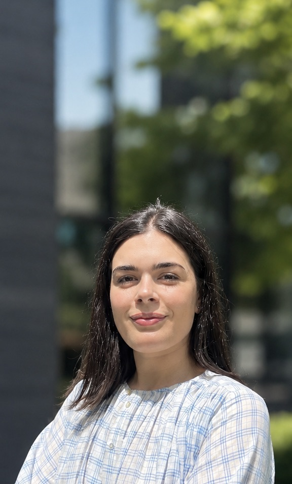

About

I'm an English teacher based in A Coruña, Spain, with eight years of teaching experience across Spain, the Netherlands and the United States. I currently work in the Galician public education system. I care a lot about how people learn languages, what actually happens inside classrooms, and how technology can help us do things differently.
But recently, something else has become a pretty big part of my life. I've started building things with AI. Not just using tools other people have created, but actually turning my own ideas into working products.
And I have to say, I didn't expect to enjoy it THIS much.
How I got here
I've taught in very different educational settings, from rural schools in Galicia to an international primary school in Maastricht, and later in the United States, where I spent two years teaching first grade in a Dual Language programme.
Those experiences changed the way I think about teaching, especially language acquisition. I started noticing differences between what research tells us about learning languages and what we sometimes do in classrooms. I had a lot of questions about that, and eventually I started writing about them.
I've also always been comfortable around technology. My dad is very techy and I grew up surrounded by gadgets. So when AI started becoming something I could actually experiment with, I wanted to see how far I could take it.
At first, I built small tools for myself and my students. Some were useful. Others were just experiments. I didn't really know how to code beyond the basics, but with Claude Code I started discovering that I could build things I would never have attempted before.
And then one of those experiments got a little out of hand.
From the classroom to Oppy
In 2026, I started developing an AI-powered tool to make teaching and curriculum planning easier. But as I worked on it, I realised that my original approach didn't necessarily reflect how unpredictable everyday teaching can be.
That made me rethink the problem I was trying to solve.
I eventually turned my attention to something I knew very well: oposiciones, the competitive examinations teachers in Spain have to prepare for to become permanent public school teachers.
I've been through that process myself, and I know how much work goes into preparing teaching programmes, organising educational legislation and designing teaching units.
That's how Oppy started taking shape.
Oppy is now an AI-powered EdTech platform with real users. I've taken it from an idea to a working product using Claude Code, making decisions about what it should do, testing features, solving problems and constantly adjusting things based on user feedback.
I've learned about things I barely knew existed a few months ago. APIs, databases, document retrieval, authentication, deployment, testing, and the actual cost of running an AI-powered application.
I still have SO much to learn. But I've also realised how much I enjoy figuring out what people need, turning that into something useful and seeing whether it actually works.
Why I'm interested in EdTech
Teaching has given me a perspective that I think is genuinely useful when developing educational products. I know what it's like to work in a classroom, plan lessons, deal with curriculum requirements and adapt when things don't go as expected.
And building Oppy has made me realise that I enjoy the entire process of developing a product. Understanding a problem, deciding what to build, testing it, listening to users and going back to improve things.
I'm interested in bringing those two experiences together, particularly in AI-powered educational products, product development and educational innovation.
I'm not trying to pretend I'm an experienced software engineer. I'm a teacher who has discovered that she really enjoys building things with technology. And I'd love to keep developing those skills.
Why public?
Because I think more teachers should be experimenting with technology instead of feeling like it's something only developers can understand.
I also think there's something valuable about showing the actual process. The things that work, the mistakes, the hours spent trying to fix something that probably shouldn't have broken in the first place.
That's why I started this website. You can follow what I'm building in Projects or read the less polished version of the story in my Journal.
Get in touch
I'm always open to conversations about EdTech, AI, language education and building useful things.
You can reach me at cristina.valoren@gmail.com or find me on LinkedIn.